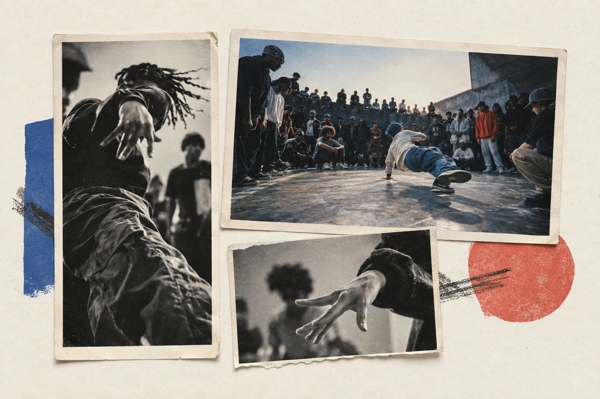
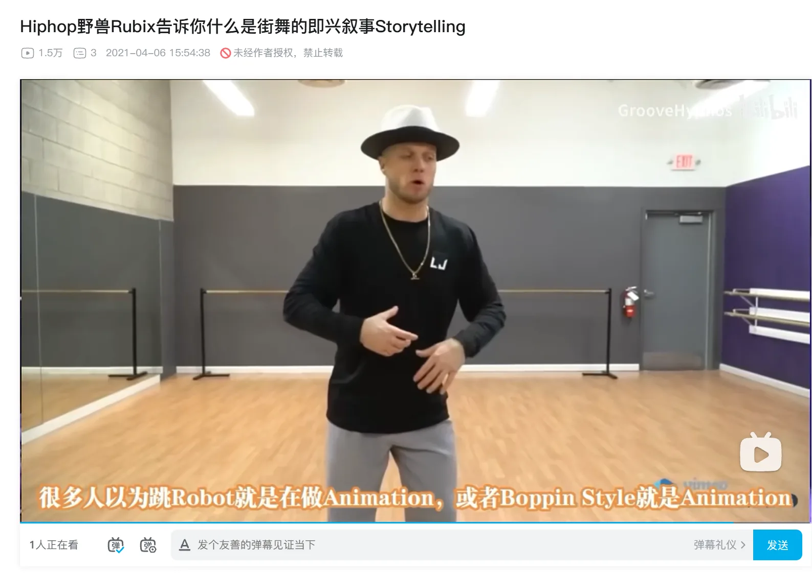

This case follows street-dance culture from source material through platform packaging to visible audience response on Xiaohongshu and Bilibili.
Research question
How is street-dance culture reformatted on Xiaohongshu and Bilibili—and what responses do those formats generate?
This directional study traces content form, editing choices, source handling and visible feedback across a small public sample. It does not rank the platforms or treat raw engagement totals as directly comparable evidence.

Visual premise: the street-dance scene stays constant; the platform edit changes how it is encountered.
The platform becomes part of the edit.
The same cultural material is not simply resized. Xiaohongshu tends to compress it into a fast visual cue; Bilibili expands it into an archive, explanation or repeatable practice format.
Xiaohongshu
Culture is compressed into a recognisable cue.
Form
Vertical clips, outfit lists, tutorials and character-led moments.
Edit
One person, place, look or detail is made legible in the first frame.
Response
Saves and questions about exact items, styling or where to find them.
Path
Visual interest can continue into search, creator replies and, when evidenced, a storefront.
Bilibili
Culture is expanded into a viewing or practice unit.
Form
Full battles, translated teaching, analysis, history series and follow-alongs.
Edit
Titles define a route: round, argument, topic, skill level, duration or outcome.
Response
Source and technique questions, requests for later topics, and practice check-ins.
Path
Chapters, subtitles and collections support revisiting, learning and tracing.
Evidence set
Trace the edit from entry point to response.
XHS-02 / XHS-04 / XHS-06
A look becomes an item search—and can continue into commerce.
Observed
A try-on cover turns several outfits into a scan-ready visual list. In another sampled post, viewers ask for the clothes and trousers by name; the creator replies with brand names. The same creator account also has an in-app storefront.
Reading
On Xiaohongshu, the post does not end at aesthetic recognition. A visible detail can become a keyword, a creator reply and a shopping route. The evidence confirms the route, but not that the exact trousers shown are stocked in the captured storefront.
01 · Cover packages eight looks into one visual index.02 · Viewers convert the look into item and brand questions.03 · The same creator account provides a storefront route.
BILI-01 / BILI-05
Source and translation turn global material into local access.
Observed
One repost names a YouTube URL in the description. A translated teaching video keeps the original dancer and English terminology visible while Chinese subtitles explain the movement.
Reading
Bilibili can work as an access layer: source tracing helps audiences move back toward the original context, while subtitles lower the language barrier without replacing the teacher or vocabulary.
Platform context
Bilibili functions both as a creation platform and as a circulation layer for secondary creations and overseas material. Uploaders make that material locally legible through selection, titling, translation and explanatory context.
01 · Description points viewers toward the YouTube source.

02 · Chinese subtitles add access while the teacher and terminology remain visible.
BILI-03 / Follow-along practice
The promise is not “watch this”—it is “finish this with us.”
Observed
“Zero basics + 24 minutes + sweat follow-along” states level, duration, intensity and use case before playback. Mirror-ready instruction and a 23-part collection support repetition; opening danmaku includes first-day and completion check-ins.
Reading
The video is formatted as a session rather than a showcase. Duration, sequence and public check-ins turn viewing into a repeatable communal practice.
Opening frame · Use-case title, mirrored movement and public check-ins appear together.
The same cultural material is reshaped at three points.
Entry point
What is made visible first?
Xiaohongshu foregrounds a recognisable person, look or item. Bilibili foregrounds a viewing or learning use case: a complete battle, an explained concept, a translated lesson or a timed follow-along.
Content structure
How is the material organised?
Xiaohongshu compresses the subject into a short visual reference, list or styling step. Bilibili expands it through rounds, source links, subtitles, chapters, collections or a sequenced practice session.
Response pattern
What does the format make easy to do next?
Xiaohongshu makes saving, identifying and asking where to find a detail easy. Bilibili makes tracing a source, discussing technique, requesting another topic and checking in after practice easy.
One idea needs multiple native treatments.
Keep one cultural proposition, but redesign the hook, evidence, sequence and intended response for each platform.
Keep the cultural proposition shared.
The people, source and point of view stay consistent even when the content form changes.
Build the Xiaohongshu edit for recognition.
Lead with one person, look or item, then make the detail and next search path easy to retrieve.
Build the Bilibili edit for depth or practice.
Use source, terminology, chapters or mirror instruction, then invite a question, request or check-in.
Different platform edits lead to different cultural responses.
In this initial sample, Xiaohongshu turns street-dance culture into fast visual recognition and item discovery, while Bilibili structures it for tracing, explanation and repeat practice. AI helped organise the research sheet and compare recurring patterns; I selected and reviewed the material, captured the evidence, verified each claim and made the final editorial judgement.